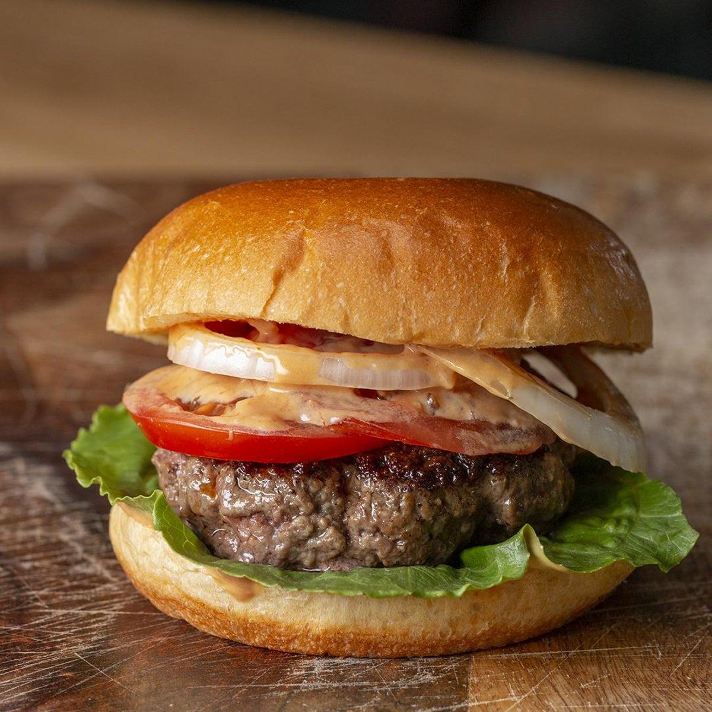

Hamburger recipe

Yiyo burger
The Yiyo burger is king. A culmination of mankinds evolution. We were created with a singular purpose, to eat this burger. If you have never had one then welcome to day 1 of your new life. Agamemnon didnt sail a thousand ships for Helens looks, she was the only one who knew how to make yiyo burgers, and thats worth going to war for -Homer maybe.
You'll notice theres no veggies in this recipe. Thats because big Al dont roll like that. you get meat, cheese, and fries. The essential food groups. You can add what you want after, but dont call it a yiyo burger, and dont call your life worth living. church.
Ingredients
- Brioche Buns
- 80/20 Ground Beef
- Pickles
- Mayo
- Fries
- Colby Jack Cheese
- Pepper
- Lowrys Seasoned Salt
Steps
- Get 4oz of beef and flatten into a square, wendys style, I used to think it was weird but it makes cooking easier. Circles will shrivel up like costanzas bits in the pool.
- cook some fries
- Toast buns on Skillet thing at medium high heat.
- Add Mayo to buns.
- Add 4 pickles to the bottom bun. do nut use the pickle butts. they are gross. Only big slices here.
- Grill patty for 2 minutes per side. add pepper and lowrys to each side. Add cheese after the flip.
- Place burger on bottom bun after cooking. Add top bun
- Let rest for 2 minutes, flip the burger over and remove top bun. Add a handful of fries to bottom bun and then reassemble burger.
- You have just experienced gods creation of the universe, except it tastes better. enjoy!
Go Back